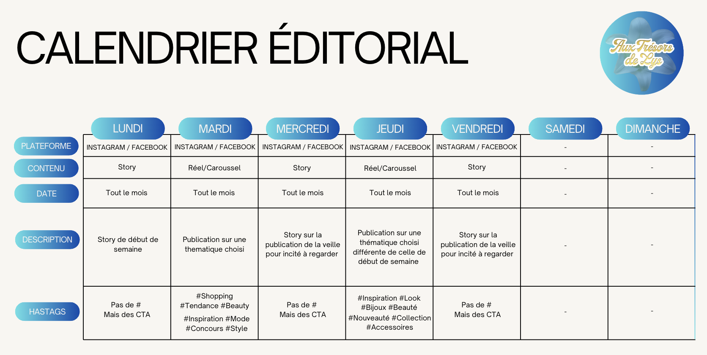

Chef de Projet Digital × FNAC Darty
EFREI Paris · Campus Villejuif
Je suis Mathéo BENTO, étudiant en Master Marketing Digital en alternance chez FNAC Darty, où j'occupe le poste de Chef de Projet Digital. Mon parcours m'a conduit de la communication de proximité où j'ai piloté la stratégie digitale d'une boutique indépendante, jusqu'aux enjeux du marketing digital à grande échelle.
Ce portfolio présente les preuves de ma montée en compétences sur deux axes clés du Bloc 6 : la stratégie de contenu éditorial (C20.3) et la mesure de la performance digitale (C20.4).
Découvrir mes compétencesAcquisition des fondamentaux de la négociation, de la relation client et de la digitalisation commerciale. Premiers contacts avec la prospection, la gestion de la relation client multicanale et le pilotage d'outils CRM.
Première immersion professionnelle en solo : gestion complète de la stratégie de communication d'une boutique de prêt-à-porter indépendante. Animation des réseaux sociaux Instagram et Facebook, création de contenus (visuels, réels, stories), organisation d'événements (Braderie de la Chandeleur, Tombola de Pâques, coachings mode) et mise en place d'un suivi mensuel des KPIs.
Pilotage de projets digitaux au sein d'un groupe leader du retail. Coordination transversale entre les équipes marketing, e-commerce et communication. Mise en œuvre de stratégies d'acquisition et de fidélisation digitale à grande échelle.
Chaque compétence est illustrée par un livrable concret issu de mon alternance, accompagné d'une mise en lien explicite avec les critères de la grille d'évaluation.
En alternance chez Aux Trésors de Lys (LP CCIC, 2024-2025), j'ai pris en charge l'intégralité de la stratégie de contenu sans équipe dédiée ni budget communication. J'ai conçu une ligne éditoriale complète, planifié les publications sur Instagram et Facebook, créé des contenus variés (réels, carrousels, stories, flyers) et organisé des événements physiques relayés en ligne.
Aujourd'hui, au sein de FNAC Darty, j'applique ces compétences à une échelle plus large, en pilotant des projets de contenus digitaux dans un environnement multi-équipes et multi-canaux.
J'ai conçu un calendrier éditorial structuré pour planifier l'ensemble des publications de la boutique sur une période donnée. Ce document organise les contenus par type (réel, post, story), par objectif (visibilité, engagement, vente), par date et par plateforme. Il constitue la preuve directe de ma capacité à anticiper, structurer et piloter une stratégie éditoriale.
Voir le calendrier éditorial →Je maîtrise les enjeux d'une stratégie de contenu : définition de la cible, ligne éditoriale, choix des formats et des canaux, cohérence avec les objectifs business.
Le calendrier éditorial est un livrable opérationnel réellement utilisé en entreprise, directement issu de ma mission chez Aux Trésors de Lys, avec une continuité dans mon poste actuel chez FNAC.
J'ai coordonné la stratégie de contenu en autonomie totale, en gérant les contraintes de temps, de moyens et de saisonnalité, tout en maintenant une cohérence de marque sur l'ensemble des publications.
Pendant toute l'année de LP CCIC, j'ai mis en place un système de suivi mensuel des performances des comptes Instagram et Facebook de la boutique. J'ai utilisé Meta Business Suite comme outil principal d'analyse, complété par un tableau Excel que j'ai construit de A à Z pour centraliser les KPIs.
Cette démarche analytique m'a permis d'ajuster la stratégie en continu : fréquence de publication, formats privilégiés, horaires optimaux, types de contenus les plus performants. C'est cette rigueur data-driven que je développe désormais chez FNAC Darty.
Un tableau de bord mensuel des KPIs couvrant 12 mois (de septembre 2024 à août 2025), intégrant : portée, impressions, taux d'engagement, croissance d'abonnés, performances par type de contenu (réel, post, story) et comparaisons mois par mois.
Voir les KPIs →Je sais identifier les KPIs pertinents pour chaque objectif digital (visibilité, engagement, conversion) et les interpréter pour prendre des décisions stratégiques.
Le tableau de suivi est alimenté chaque mois à J+7 de chaque publication pour capter le pic d'engagement réel. Les données couvrent un cycle complet de 12 mois, permettant une analyse saisonnière fiable.
Les insights issus des données ont directement influencé mes choix éditoriaux : abandon des posts fixes au profit des réels Instagram, publication en soirée en semaine, et segmentation Instagram (jeunes 25-44 ans) / Facebook (audience locale 44+).
Outil de planification du contenu sur les réseaux sociaux

Ce calendrier éditorial est l'outil central de ma stratégie de contenu. Il planifie chaque publication en amont : type de contenu, plateforme (Instagram ou Facebook), objectif, date et heure de publication. Il matérialise ma capacité à anticiper les temps forts (soldes, fêtes, événements boutique), à varier les formats et à maintenir une cohérence éditoriale sur la durée.
J'ai conçu ce document pour structurer la production de contenu d'une boutique qui n'avait aucun cadre éditorial avant mon arrivée. Il est directement utilisé au quotidien par l'équipe pour aligner communication digitale et actualité commerciale.
Suivi mensuel des statistiques Instagram & Facebook · 12 mois
J'ai construit de A à Z un tableau de bord Excel centralisant toutes les métriques mensuelles : portée, impressions, engagement, croissance d'abonnés, performances par type de contenu. Les relevés sont effectués à J+7 de chaque publication pour capturer le pic d'engagement réel et non les premières heures.
Ces données m'ont permis de prendre des décisions stratégiques concrètes : privilégier les réels Instagram (+60% de portée vs posts fixes), publier en soirée en semaine (mardi/jeudi), et adapter le ton selon la plateforme (Instagram = jeunes visuels / Facebook = information locale détaillée).
Preuves opérationnelles de mise en oeuvre des deux compétences
Organisation complète : charte graphique dédiée, flyers distribués en ville, relations avec les élus de la mairie de Lisses, tonnelle extérieure, animation en boutique, couverture réseaux sociaux en live et post-événement.
Mécanisme de fidélisation sur 1 mois (1 ticket par tranche de 10€), communication digitale avec compte à rebours en stories, teasing vidéo, puis analyse des retombées pour améliorer les futures éditions.
Sessions mensuelles en partenariat avec la coach en habillement Alexandra. Planification, promotion sur les réseaux, accueil des participantes, création de contenus post-événement pour valoriser l'expérience client.
Intégration dès le premier mois du suivi analytique. Création d'un template Excel reproductible mois après mois pour comparer les performances et identifier les tendances sur 12 mois consécutifs.
En tant que Chef de Projet Digital, je maîtrise les environnements web. Construire mon propre site portfolio était la façon la plus logique et la plus authentique de démontrer cette compétence. C'est un support que je sais concevoir, structurer et présenter devant un jury.
Contrairement à un PDF ou un PowerPoint, un site web est navigable, zoomable, cliquable. Il permet d'intégrer des livrables directement accessibles (calendrier éditorial, KPIs) et offre une expérience de présentation plus dynamique et mémorable pour le jury.
Là où Figma ou Notion auraient suffi, un site développé en HTML/CSS/JS montre une maîtrise technique réelle. Il incarne la philosophie du marketing digital que je souhaite exercer : penser l'expérience utilisateur, allier fond et forme, livrer un produit fini de qualité.